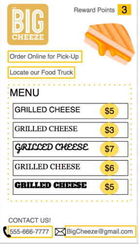

This inforgraphic has a lot of information on food trucks around the couuntry.
Our app would have the location aspect as well as a pickup order function. This is how it can potentially be designed.
Our survey is our primary research and it shows how most people on campus like to order their food.
People are more interested in eating local foods. Food trucks provide unique food that is different from franchise locations. The graph shows the huge increase in people who wanted to search for what or where a food truck is. Therefore, there needs to be more ads so that people are attracted to them.
From the data we have gathered, we have learned that there is a rise in food trucks. However, there is a problem for the owners and customers being able to connect with each other and the struggle of being able to order food. Most of the time, there is just not enough information on the food truck availible for a customer. Therefore, our goal is to make that simpler and attainable.